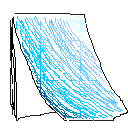

Stationary
A pencil draws a grey world; howerver, color has been already in his heart.

Stall pool
No strong background like academic pool and merely enjoy playing toy.
dna to Mirror
A group that works on migrating projects into JavaScript.
dna to Fork
A group to track customized projects.About Life
The world's perverse, but it could be worse. -- Mona van Duyn
About Death
And Death,who plucks eyes like flowers. doesn't find my eyes. -- Rainer Maria Rike
About Love
Murmur, a little sadly, how Love fled
And paced upon the mountains overhead
And hid his face amid a crowd of stars. -- William Butler Yeats